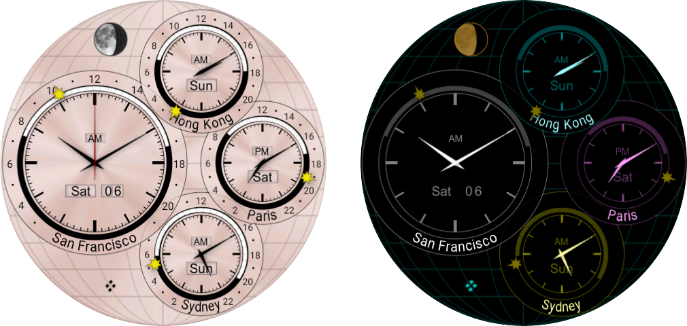
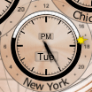
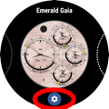
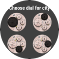
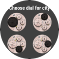

| Buy this face |
|
| Buy all 21 faces |
|
| Buy this face |
|
| Buy all 21 faces |
|
Gaia and Terra are world-time faces. Both are included in Emerald Chronometer, or you can buy each of them separately.
Gaia has four subdials, each of which displays information for a single city, whose name is labelled on the bottom of its subdial. As with Terra, you may customize the particular set of cities shown from the 80,000-city database.
Each subdial has a central set of 12-hour hands, a day/night ring like that of Mauna Kea showing the actual times of day and night against an outer 24-hour dial, a Sun hand which indicates the approximate time against that outer dial, and windows for AM/PM and for the day of the week.
For example, in the picture to the left,  it's around sunset in New York on Tuesday, about 5:25pm. The time can be read most easily by the central 12-hour hands and the PM in the window, but it may also be approximately read with the 24-hour sun hand, which is between the 18 and the previous dot at 17.
In addition, the largest subdial on the left contains a second hand and a window for the day of the month. The largest subdial will always display the device time (to avoid confusion), but you can set it to a different city name within the same time zone. The day/night dial will show the sunrise and sunset time of whatever city name is displayed on the dial.
The face also has a small moonphase dial in the upper left. It does not rotate like the moonphase dials on Chandra and others, because it is intended to apply to all of the cities shown (the moonphase does not depend in any significant way on observer position, but the rotation does).
Note that the timezone rules are obtained from the version of the OS installed on the watch device, and may not reflect recently-enacted rule changes.
In ambient mode, the same information is displayed, with different colors to save energy.
This face allows you to customize the cities that are shown on each subdial.
 

 

To customize a city shown on a subdial:
NOTE: The large subdial at left must display the time in the timezone your watch device has been set to. If you select a city in a different timezone, you will not be allowed to replace the large subdial. And if you later travel to a different timezone, the city you selected will move to one of the smaller subdials.